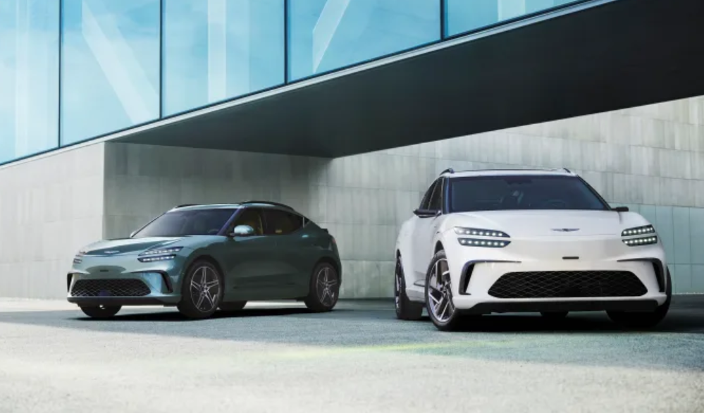
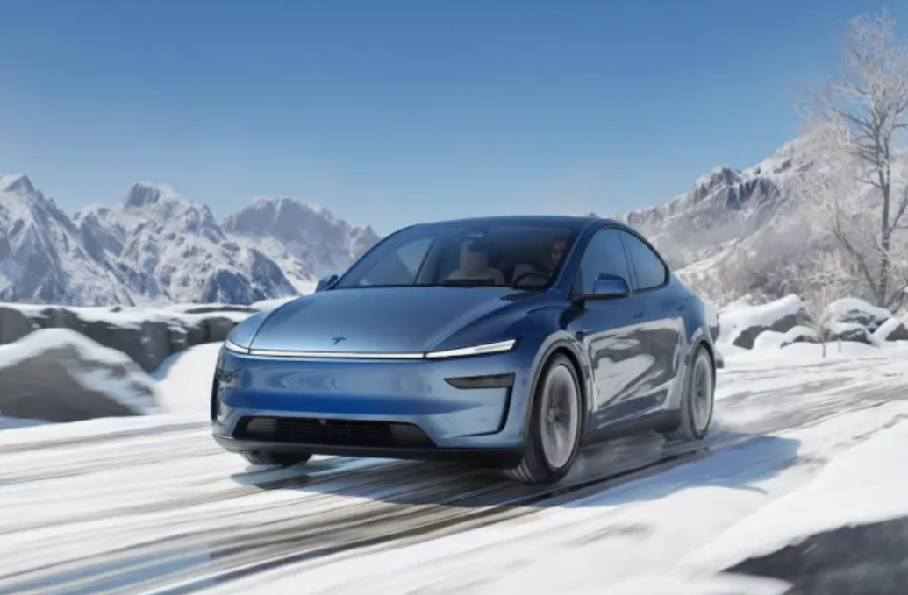
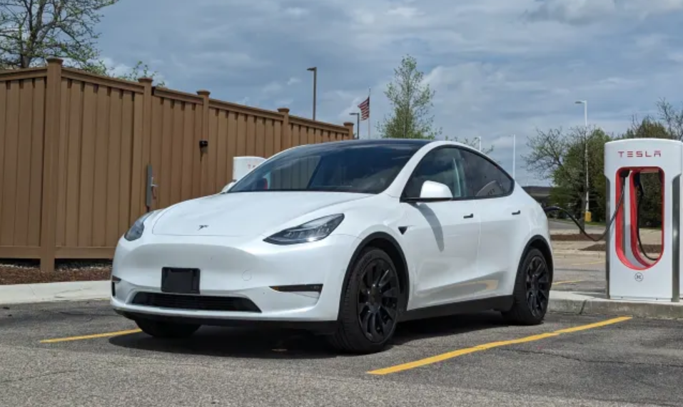
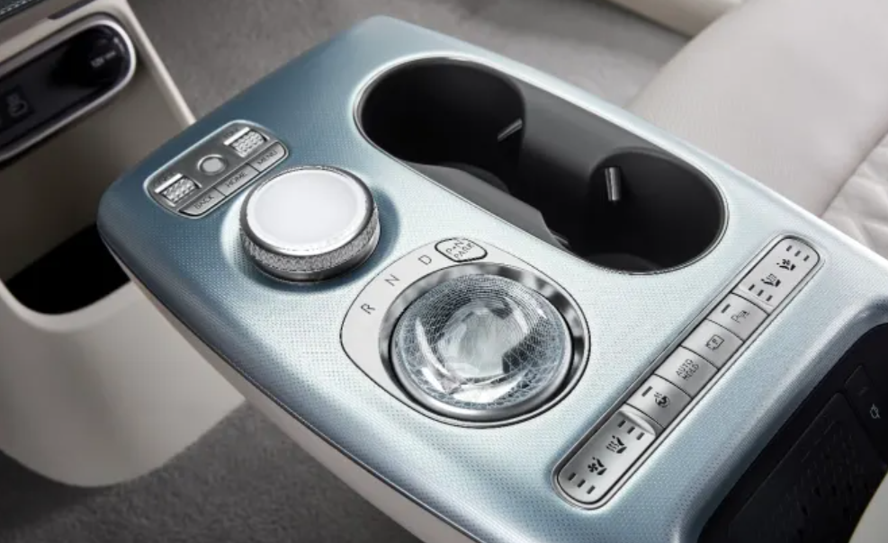

Both the Model Y and GV60 offer impressive performance and luxury, yet one ultimately pulls ahead in this tight race.
Nate Swanner Updated : Jan 16, 2025

Choosing a midsize EV SUV, or crossover if you prefer, used to be pretty simple. You either bought a Tesla Model Y or splurged on a Model X. As electric vehicles become more mainstream and other automakers establish their definitions of what an electric vehicle should be, Tesla will encounter significant competition.
The latest such EV to hit the market is the GV60, a sleek offering from Genesis, Hyundai’s luxury brand. It certainly looks the part, and Genesis has a reputation for producing some outstanding vehicles—but how does the GV60 compare to the Tesla Model Y?
Let’s dig in.
Range and Charging: Tesla Model Y
The Model Y offers nearly 300 miles of range, falling just short at 277 miles. The GV60 falls even shorter of that “acceptable” 300-mile range threshold, with a 264-mile range for its AWD models. If you opt for RWD, the Model Y provides 337 miles of range, and the GV60 increases to 294 miles. Range anxiety is a real concern, y’all.
Genesis’s GV60 supports 350kW fast charging, while the Tesla Model Y supports 250kW fast charging. At 350kW, the GV60 can charge from 10 to 80 percent in around 18 minutes, while the Tesla Model Y adds about 170 miles of range in roughly 15 minutes.
Genesis has partnered with Electrify America for its GV60, GV70, and GV80 vehicles, which offer drivers some special perks. During DC fast-charge sessions, you can receive 30 minutes of complimentary charging or 60 minutes for Level 2 charging.
Both vehicles offer a significant quick charge of under 20 minutes, but we have more confidence in Tesla’s charging network and its coverage. Third-party charging networks often do not fulfill their fast-charging promises so they're not perpetually reliable just yet.
Ride: Genesis GV60
Let’s be clear: the interior of the Tesla Model Y feels outdated and minimalistic. Although Tesla was one of the first to design spacious electric vehicle interiors, it has never refreshed that design.
The Genesis GV60 has a more premium and convenient interior. The driver has actual buttons for important controls like AC and seat warmers, and the crystal ball drive mode selector is a bit goofy, but it’s cool.
Reviewers note that the Genesis GV60 handles well and feels sportier, which is what you want in any premium vehicle. We also like that its roof glass is covered; the Tesla Model Y doesn’t have a full cover, and on a really warm day, you’ll know why that matters.The GV60 also offers a comfier ride for rear passengers, with dedicated vents and reclining seats on each side.
Style: Genesis GV60
Tesla’s design language (except for the Cybertruck) suggests that the team is dragging a cursor around a CAD drawing to expand or shrink elements. Case in point: the Model Y looks like a bloated Model 3.
The Genesis GV60 isn’t entirely unique—it reminds me of the Audi Q5—but it stands out from other EVs in its class. We also credit Genesis for its consistent iterative updates to its vehicles, something Tesla doesn’t even attempt to do.
Inside, the Genesis feels like a luxury vehicle designed to embrace its passengers. We appreciate that it supports CarPlay and Android Auto, and the newly designed panoramic display is stunning.
The Model Y is a pure and simple people-mover, which isn’t good enough in 2025. Its interior styling was bold when it first launched, but we want more than a single tablet slapped onto a dash.

Performance: Tie
Both the GV60 and Model Y offer dual motor variants. The GV60 delivers 483 horsepower with speed boost engaged, compared to the Model Y’s 455 horsepower. The GV60 can accelerate to 60 miles per hour from a complete stop in 3.9 seconds, which is quite close to the Model Y’s 3.5 second 0-60 time. Horsepower and acceleration are dead heat here, underscoring that the age of EVs has brought an embarrassment of riches to this department.
Ownership Experience: Tesla
Genesis is a Hyundai brand, and its dealership network has a poor reputation. When purchasing, we recommend that you focus more on the service center than the sales team, as you will likely be interacting with service more frequently than with sales.Tesla may not have the best reputation, but we feel more confident in its dealership network.
Price: Tesla
The GV60 Performance AWD starts at $69,900, and the Tesla Model Y Performance Dual Motor All-Wheel Drive version starts at $51,490. We’re comparing these two vehicles as they’re the top-end trims for each model. Price is where the rubber meets the road—pun intended—and it’s not even close. You definitely get more with the Genesis GV60, but you’re going to pay for it.
Final thoughts
The Tesla Model Y and Genesis GV60 exist in the same class but are often worlds apart. If you’re looking for a "more affordable" car with pedestrian styling that delivers a good amount of power when you hit the accelerator, the Tesla Model Y is a solid choice. It’s a quintessential EV. We prefer its charging network and feel more confident in its dealer network for service calls, but the vehicle itself has become staid.
The Genesis GV60 has much more personality, is more enjoyable to drive, is far more comfortable, and certainly turns heads.
When it comes to EVs, power and 0-60 times have become less significant; you won't notice much difference between 483 horsepower and 455 horsepower in everyday driving. Ride comfort and the in-car experience are what truly differentiate them, and the GV60 clearly excels in these areas.
There’s a lot to like about the GV60, but whether the nearly $20,000 premium is worth all of the differences between it and the Model Y is entirely dependent on you.